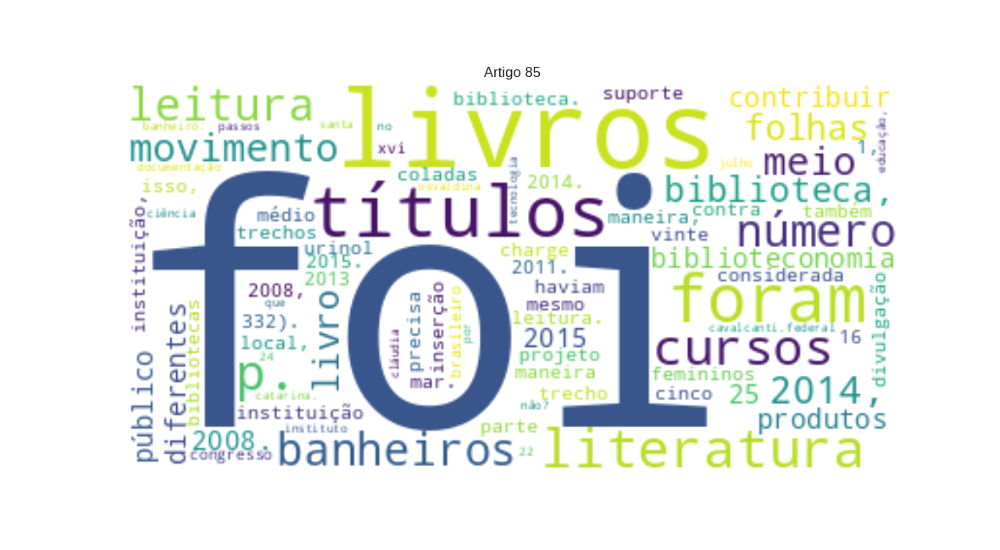

85 - CAVALCANTI, Cláudia O. dos Passos_Leitura no banheiro_Por que não.txt

XVI
Congresso Brasileiro de Biblioteconomia
LOC
e Documentação 22 a 24 de julho de 2015 LEITURA NO
BANHEIRO
MISC
: POR QUE
NÃO?
MISC
Cláudia Osvaldina dos Passos Cavalcanti
PER
.
Instituto Federal de Educação, Ciência e Tecnologia de Santa Catarina
LOC
. claudia.passos@ifsc.edu.br
Renata Ivone Garcia
PER
.
Instituto Federal de Educação, Ciência e Tecnologia de Santa Catarina
LOC
. renata.garcia@ifsc.edu.br
Introdução
MISC
A
Biblioteca do Instituto Federal de Educação, Ciência e Tecnologia de Santa Catarina
LOC
(
IFSC
LOC
), câmpus
Araranguá
LOC
, foi concebida junto ao nascimento do câmpus, que por sua vez foi inaugurado em 25 de março de 2008. A
Biblioteca
LOC
tem por finalidade oferecer acesso informacional aos programas de ensino, pesquisa e extensão do
IFSC
ORG
, desenvolvendo serviços e produtos que possibilitem satisfazer as necessidades informacionais de seus usuários; disponibilizar fontes de informação atualizadas e em diferentes suportes, que sirvam como apoio para as atividades acadêmicas e científicas, visando contribuir para o desenvolvimento profissional do cidadão colaborando, dessa forma, para o desenvolvimento científico, tecnológico e cultural da sociedade (
BRASIL
LOC
, 2011). A
Biblioteca
LOC
atende um público diferenciado, visto que a instituição oferta cursos em diferentes modalidades e níveis de conhecimento, como cursos de ensino médio integrado ao técnico, cursos técnicos concomitantes, cursos de formação inicial e continuada e, por fim, cursos de ensino superior. Dessa maneira, a
Biblioteca do IFSC Araranguá
LOC
pode ser considerada mista. De acordo com
Mattos e Pinheiro
PER
(2006, p. 10),
A biblioteca mista
MISC
é uma união da biblioteca escolar e da universitária, tendo como público os alunos de educação infantil, ensinos fundamental, médio e superior, docentes e funcionários da instituição. Seu objetivo principal é dar suporte ao que é proposto no projeto político pedagógico da instituição, abrigando acervo, produtos e serviços em um mesmo local, originariamente o da biblioteca escolar ali existente. Além de dar suporte ao
Projeto Político Pedagógio
MISC
da instituição, e dessa maneira contribuir para o processo de ensino-aprendizagem, a
Biblioteca Escolar
LOC
“[...] precisa ser aberta, ser interativa, e constituir-se num espaço livre para expressão genuína da criança, do adolescente e do jovem.” (
CÔRTE
MISC
;
BANDEIRA
MISC
, 2011, p. 3). Para alcançar essa interatividade, a biblioteca precisa ser dinâmica dentro do ambiente escolar por meio do desenvolvimento de ações de incentivo à leitura e ampliação do acesso à cultura. �
Ação Desenvolvida pela Biblioteca do IFSC Araranguá Dentre
MISC
as ações de incentivo à leitura desenvolvidas pela biblioteca do
IFSC Araranguá
ORG
em 2014, relataremos a experiência da ação “
Leitura
MISC
no banheiro”, que aconteceu de 4 de setembro a 11 de novembro de 2014. A ideia foi adaptada de uma atividade já existente no
IFSC Câmpus Lages
LOC
, inspirada no movimento
Dadá
PER
(
Dadaísmo
MISC
). O movimento foi fundado em 1916 em
Zurique
LOC
[
Suíça
LOC
] pelo escritor
Tristan Tzara
PER
(1878-1963) e por um grupo de artistas e intelectuais de vanguarda. O termo dadá indica rejeição ao passado, rebelião contra as formas culturais codificadas. Os participantes haviam se eximido da
Grande Guerra
MISC
e eram contra a burguesia que haviam desencadeado o conflito. (
PRETTE
ORG
, 2008, p. 332). Dentre as obras que marcaram esse movimento está o urinol virado de
Marcel Duchamp
PER
, Urinol-fonte, 1917. “O urinol foi movido do seu contexto e apresentado na primeira mostra de artistas independentes em
Nova York
LOC
.” (
PRETTE
ORG
, 2008, p. 332). Sendo assim, para sair da tradicional divulgação dos livros dentro do espaço da biblioteca, levamos o incentivo à leitura para os banheiros do
IFSC
ORG
. Para isso, foram selecionados vinte e cinco (25) títulos de literatura do acervo da
Biblioteca
ORG
. Destes, copiamos um trecho de cada livro em folhas
A4
MISC
, e com reticências (...) deixávamos a expectativa de saber o desfecho. Além do trecho da obra, também foi acrescentado uma charge mostrando como os próprios leitores estavam no banheiro pensando: “Mas e depois, o que acontece?” e na continuação da charge a resposta do livro: “Venha conferir!
Sou
PER
o livro número 1, estou na biblioteca”, conforme podemos conferir na figura ao lado. As vinte e cinco folhas
A4
MISC
com trechos de livros foram coladas em locais estratégicos, sendo que nos banheiros femininos foram coladas na parte de dentro das portas dos banheiros e no masculino na parte de cima dos mictórios. Dessa maneira, enquanto as pessoas estivessem utilizando o local, teriam a oportunidade de ler. Assim, quando o leitor se interessava pelo livro, este vinha a biblioteca, sabendo o número do livro que o instigou. Na biblioteca, os títulos estavam organizados numericamente numa lista e as obras ficavam expostas na estante de sugestões de leitura. Durante o período de dois meses em que decorreu a atividade, as folhas com a divulgação dos trechos dos livros foram alternadas de lugar, com o objetivo de que todas as obras fossem divulgadas, tanto nos banheiros femininos como nos masculinos. O retorno dos alunos e servidores sobre a ação foi imediato, de maneira que muitos vieram à biblioteca perguntar pelos livros com o intuito de ler o restante da obra e �outros nos encontravam pelos “corredores” da instituição e elogiavam a ideia. Destaca-se que a quantidade de livros de literatura até 2013 era de 183 títulos e 221 exemplares mas, com a aquisição por meio de compra e doações, em 2014, houve a inserção de 53 títulos e 55 exemplares, totalizando 236 títulos e 276 exemplares. Um aumento de 28,96% do acervo. O número de empréstimos e renovações de livros de literatura em 2013 foram de 260. Em contrapartida, no ano de 2014, foram 451, percebendo um crescimento de 73,46%. Acredita-se que, mesmo com a inserção de materiais no acervo sendo considerada significativa, a ação “
Leitura
MISC
no banheiro” especificamente foi um dos motivos do número de empréstimos de livros de literatura ter aumentado em 2014.
Considerações Finais
MISC
A biblioteca está adquirindo novos títulos para o aumento de seu acervo de literatura, definidos por meio de uma consulta realizada junto aos usuários e posterior análise da biblioteca. Junto a isso, também foi realizado um levantamento dos livros clássicos da literatura e solicitadas doações para as editoras dos mesmos. Diante da boa repercussão da ação e da aquisição de novos títulos de literatura de interesse da comunidade, pretende-se em 2015 dar continuidade ao projeto “
Leitura
MISC
no banheiro”. Palavras-chave: Biblioteca escolar. Incentivo à leitura. Criatividade. Dadaísmo. Referências
BRASIL
LOC
.
Ministério da Educação
LOC
. Resolução
CEPE
ORG
/IFSC Nº 165, de 25 de outubro de 2011. Estabelece o
Regulamento Único
LOC
para o
Sistema de Bibliotecas
ORG
do
Instituto Federal de Educação, Ciência e Tecnologia de Santa Catarina
LOC
. Disponível em: <http://www.ifsc.edu.br/menu-bibliotecas-resolucoes>. Acesso em: 16 mar. 2015.
CÔRTE
ORG
,
Adelaide Ramos
MISC
e;
BANDEIRA
MISC
,
Suelena Pinto
PER
. Biblioteca escolar.
Brasília
LOC
,
DF
LOC
:
Briquet de Lemos
PER
/
Livros
MISC
, 2011.
MATTOS
PER
,
Ana Luiza de Oliveira
PER
;
PINHEIRO
LOC
,
Michelle
LOC
. O perfil das novas bibliotecas escolares-universitárias (bibliotecas mista) nas instituições de ensino privado no
estado de Santa Catarina
LOC
. Revista ACB: biblioteconomia em
Santa Catarina
LOC
,
Florianópolis
LOC
, v. 11, n. 1, p. 171-184,
jan./jul
LOC
. 2006. Disponível em: <http://revista.acbsc.org.br/racb/article/view/474>. Acesso em: 16 mar. 2015.
PRETTE
PER
,
Maria Carla
PER
. Para entender a arte: história, linguagem, época, estilo.
São Paulo
LOC
:
Globo
ORG
, 2008. �